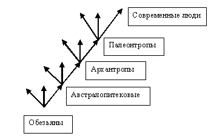

| ГЛАВНАЯ | РЕКОМЕНДУЕМЫЙ ПУТЬ | РАЗОБЛАЧЕНИЯ | АВТОР | ПОМОЩЬ |
| Разоблачения > Трактат > Z. Свободные дополнения |
Введение
Эта, завершающая, часть представляет собой исключение, отличие от других частей. Она состоит из мыслей, которые не обосновываются строгим образом, а также не преподносятся, не резюмируются и не имеют обязательного вывода. Часть эта написана в обыкновенном стиле изложения, который просто «льётся». Таким образом, я не смог полностью избежать этого свободного стиля, который я считаю малоуместным в познавательных сочинениях, где обязательны строгие доказательства. Впрочем, равно как не смог отказать себе в удовольствии этого непринужденного стиля.
О беспокойстве Физическую боль не преодолеть разумом, но можно вытерпеть; душевную боль и беспокойства преодолеть лишь разумом, но невозможно вытерпеть. На самом деле человек не способен пережить только одну вещь – свою собственную смерть. О бессмертии Смертные на ученом поприще на то и смертные, которых без доли сожаления время быстренько похоронит в своем вечном забвении. Ведь эти смертные пытаются всячески и всегда выставить свою бессмысленную ученость и ум в сложнейших словах, терминах, словосочетаниях. Они полагают, что именно этим они и достигают чего-то величественного. Им не дано понять, что всё бессмертное, которое когда только ни было, всегда было простейшим и в словах, и в ясности смысла. Оно на то и бессмертное, что ему не надо прятаться, дабы устоять, за семью стенами бессмысленных и будто бы великих нагромождений. Но наши психологи по-прежнему говорят своими бессмысленными терминами, лишенными и смысла, и обоснованности, и мнят, будто это и есть наука. Затем приходит новое поколение. И оно перенимает всё то же самое, полагая, что находится в сфере подлинной науки. Себя же они вообще считают недосягаемыми учеными по сравнению с окружающей серостью. Знали бы эти смертные, что среди только этой невзрачной серости и присутствуют бессмертные, которых они не могут распознать. Ибо как смертный может распознать бессмертного? А время всё так же, поколение за поколением, партией за партией, всё хоронит и хоронит по-быстренькому, без церемоний, этих вычурных «ученых». Нам со школьных учебников, т. е. с детства, внушают в каждой аннотации к великому имени, что тот-то и тот-то – учёный. Т. е., собственно, молчаливо внушают, что человек, который совершил своё бессмертное открытие, был, вероятно, человеком при том или ином университете, носил искусственный парик и «треуголку» учёного, состоял в пожилых учёных обществах, имел учёные степени, участвовал в учёных исследованиях, да и вообще, короче говоря, вёл учёный образ жизни, т. е. был учёным. С каким, однако, громким треском должно рухнуть это представление у каждого, кто подвержен ему и кто узнает что-нибудь о биографиях этих «учёных»! Джоуль был пивоваром. В 25 лет он произвёл наиточнейшие расчёты и эксперименты по тепловому движению молекул и представил их пожилому учёному обществу в своем отечестве. Конечно, они с большим сомнением, недоверием и неприятием отнеслись к открытию молодого пивовара, ведь кто есть он, а кто есть они – уважаемые учёные люди своего времени! Однако я поясню сейчас, кто есть он и кто есть они. Он – бессмертный, на века вошедший в историю. А они – смертные, имён которых никто не знает. И он, однако, не учёный, а они – учёные. Фарадей вообще не имел образования. Но если бы не он, то, представьте себе, мир был бы лишён всего электромагнитного в своей технике. Ибо после его открытия об электромагнитном поле, пошло развитие этого направления в физике. Он – не учёный, а, собственно говоря, как сказали бы иные, безграмотный человек. Роберт Юлиус Майер, достигший великих истин на стыке физики и философии, был, насколько я помню, фармацевтом в аптеке, он продавал обывателям таблетки. Продавец таблеток – это учёный? Эйнштейн, которого всё-таки следует уважать за разработку в сфере броуновского движения, был двоечником по физике и работал кассиром в банке, когда имя его стало известно. Разве двоечник-кассир – это учёный? Лебедев, продвинувший теорию электромагнитной волны, был всего-навсего у кого-то в подчинении лаборантом. Однако имя этого кого-то, стоящего выше по учёности, не известно, а Лебедев, между тем известен истории. Шопенгауэр, говоря теперь о философах, был безработным. Яков Бёме, который местами приходил к великим истинам, был сапожником. Пожалуй, только Аристотеля и Платона ещё не очень решаются называть учёными, так как в их времена не было всех этих университетов, а Абеляр, меж тем, правильно заметил на будущие века каждому про них и таких, как они. Он сказал примерно следующее. – Это были простые люди, каковых много среди нас. Они имели друзей. Гуляли, шутили, общались. Вели обыкновенную жизнь каждого. Они ничуть не были буквоедами, как нам теперь кажется. Но помимо своей обыкновенной жизни, они так же имели склонность иногда размышлять. Простые люди, многие ученые и философы часто употребляют слова, под которыми они либо ничего не мыслят или даже не могут что-либо мыслить или же мыслят под ними что-то очень смутное. Они говорят: «Фотон. Субъект. Объект. Субстанция. Теория относительности», - они развивают далее свои соображения, строят свои теории вокруг да около этого. Они не дают прежде всего четкие и понятные определения понятий, которыми оперируют. Так вот и диалектический материализм 160 лет судачил о развитии и только через 160 лет дал ему определение, полное всевозможных логических ошибок. Не представляя, что значит «фотон», они не знают, что он тождествен «кванту» и «частице излучения»; они просто говорят о нём. Говоря «объект», они вкладывают в него и смысл «объекта», и значение «не-объекта». Думая о теории относительности, полагают, что рассуждают о всяческой относительности, хотя эта теория говорит только о безотносительности. Выдумывают какие-то субстанции, но мыслят под ними такое что-то смутное, что это невозможно ни понять, ни привести примеры к этому; к тому же каждый склонен мыслить под этим словом что-то своё. В сущности, они и здесь просто повторяют то, что им предложили на этой планете, где они родились. Они повторяют слова, которые они услышали, родившись на этот свет. Они просто повторяют, не предпочитая всячески проверять это. Как и в целых теориях, так и здесь – в понятиях – они ведут себя одинаково. На то они и смертные. Разница между тем, кто самостоятельно совершил бессмертное открытие, и тем, кто пытается перехватить открытие в собственной разработке, колоссальна; между ними – пропасть. Первый был призван самой природой к этому делу, все его мысли родились естественным путем, и любая дальнейшая разработка уже достигнутого им будет так же движима из естественных начал. Второй же, напротив, призвал себя сам, дабы присвоить себе чужую славу или выжать из этого какую-либо иную выгоду. Искусственным путем, на основании прочитанного у другого, он гонит себя развивать что-то понятое им. Образ его мышления нисколько не отличается от образа мышления филистерской головы. О разнице между образом мышления головы бессмертной и филистерской я говорил в первой области. Поэтому все создания и переработки этого второго относятся к творениям первого так же, как виртуальная игра к реальной жизни. И эту мысль я бы рекомендовал заметить особенно, т. к., мне кажется, после прочитанного в этом сочинении родится еще немало эфемерных газетных статей, пусть даже они будут называться у иных диссертациями. Я раскрою секрет бессмертных открытий. Хотя нет. Вдруг его захотели бы купить? Если бы я жил тысячу лет, а может и много больше того, то навряд ли бы я захотел что-то кардинально изменить в своих сочинениях, разве что только принял бы те истины, которые опровергают мои какие-то ошибочные мысли, и корректировал бы высказанное мною в соответствии с новыми бесспорными научными открытиями. А вообще я хотел бы оставить след в этом мире только в том, чтобы запечатлеть свое видение мира, оставить его именно в тех мыслях, которые я высказал, даже, может быть, я и за тысячи лет не захотел бы изменить ни единого слова в своих сочинениях. Между прочим, отказавшись поначалу от включения в свое сочинение рукописного текста давних лет, который плохо сочетался с формой сочинения, которую я изобрел (основание возникновения мысли, разоблачение, резюме и вывод, которые должны касаться только одной мысли), я впоследствии включил эти записи практически без изменений. Многие великие бессмертные книги бывают написаны по простой причине: человек искал в литературе и библиотеках ответы на какие-то вопросы, но не найдя их, взялся за их решение самостоятельно. Карнеги сообщает, что его книги были написаны как учебные пособия для слушателей его вечерних курсов, ибо в библиотеках он не мог найти подходящего пособия. Чтобы понять и осознать прочтенную философию, один француз удалился в построенный им замок и сам написал свою философию. Теперь, по прошествии многих веков, всем известно, что его зовут Монтень. Декарт начал свою философию, потому что не нашел понятности в философии его эпохи.
О вещи в себе и не-объектах Пусть звук – это некоторое явление. Тогда для Канта вещь в себе была бы– вещественная волна, для Шопенгауэра вещь в себе – сила, движущая частицами вещественной волны. Эмпирически в неразрывной связи состоит материя и движение, время и пространство, энергия и материя. Это, однако, не вынуждает не различать их. «Материя» и «движение» – разнородные понятия; и стремиться их объединить в одно, обращаясь к созерцанию, – то же самое, что стремиться объединить понятия «человек» и «лошадь», обращаясь к созвездию Кентавра. Отвечая на вопрос «чего же хочет воля?» следует ответить – «самоудовлетворенности». Шопенгауэровская воля к жизни (существованию), ницшевская воля к власти – лишь различные модификации того, чего хочет воля и чем удовлетворяется, достигая этого (достигая существования, объективируясь в нашем мире; достигая власти). В воображении и галлюцинациях всё идеально, но ему придана материальная основа. Так же и миру придана материальная основа… Удивительно, что всё объективное от боли и переживаний до восприятия мира, существует исключительно в одном индивидуальном сознании и для него. Чем вам не иллюзия? Из мира как объект невозможно иметь истинное и исчерпывающее представление о мире как не-объект. Из материи невозможно вывести ни одну силу природы, в том числе живой природы, ибо не материя служит основанием силам, а силы обуславливают сочетания и действия материи. Понятие материи уже подразумевает наличие пространства; но под пространством не подразумевается автоматически материя. В окружающем мире может эти вещи и находятся все время вместе. Но нужно все-таки отличать, то что вы мыслите, какие признаки вкладываете в эти понятия. Именно в Новый Год мы понимаем, что у каждого одно и то же настоящее и к нему имеем отношение только мы. Внешний объективный мир – это потёмкинская деревня: для нас существование чего-то за ним равно его несуществованию. Когда по отношению к чему-либо утверждается его существование, то это может быть либо существование просто в субъективном восприятии, либо существование вещи самой по себе. Объективно существовать – значит, существовать в непосредственно данном познавании данного субъекта. Наше внешнее познание есть не познание материи, а есть целостное восприятие воздействия одной материи на другую. Подобно тому как боль кажется существующей во внешнем пространстве, тогда как она всегда в самом мозге, так и объективный внешний мир предстаёт во внешнем пространстве, хотя как таковой он возможен только в мозге. «Реальность» – отрицательное понятие, ибо определяется как невоображаемое в противоположность воображаемому. «Реальность» и «субъект» – понятия отрицательные. Для нашего самоосознания объективный мир возник внезапно и беспричинно из вечного небытия; туда же сгинет. О воспитании и нравственности Бывают такие наставления, даже у мудрецов и философов, которые не мотивируют, а просто предписывают. Таких наставлений немало. Они просто показывают, как правильно жить. Но в том-то и заключается их бессмысленность. Потому что все и так знают, как надо правильно жить. То, что многие не живут по этим правилам, даже зная их, – это вопрос второй. То, что источник знания о правильной жизни имеет несколько интуитивный корень у каждого, – это также вопрос другой. Суть всё равно остаётся: почти все наставления разоблачают незнание по поводу того, как надо жить, но все и так знают, как надо жить. Дурное поведение и низкий интеллект могут быть продиктованы не только дурным воспитанием, но и отсутствием воспитания, ибо если не сдерживать волю биологического вида, млекопитающего Homo Sapiens, этого животного с речевым центром в мозгу, вынуждающего его использовать словесное мышление, которое в свою очередь развивается из-за подражания, как «эффект попугая», то тогда мы и получаем то, что имеем: практическое отсутствие Sapiens. Нравственность, не доходящая до глупости педантизма, подчёркивает преимущество разума над животным началом; отказ от нее – обратное. Для меня свойства ума и воли человека сразу понятны, когда понятно, как он использует нецензурную речь. Два человека, использующих ее, могут оказаться на разных полюсах только потому, что один разумен и знает уместное ее применение, другой же – увы.
О женитьбе Люди, которые считают смыслом своей жизни – продолжение рода, сами по себе и в своей жизни видят лишь средство для чего-то иного, т. е. они, приходится считать, – само по себе неспособное и недостойное некой цели. Неестественные и формальные отношения, обязанности и потребности не могут быть необходимыми и нужными, если только они не способствуют напрямую индивидуальному выживанию и сносной жизни. Для многих взросление, зарабатывание денег или просто даже восхищение чьей-то внешностью (т. е. любовь) служит основанием сожительства, брака, рождения детей, что они считают жизненной необходимостью и счастьем: слова Эпикура, Аристотеля, Шамфора, Шопенгауэра и т. п. для них – пустые звуки. Это, соответственно, слова о необходимых, достаточных потребностях; о том, кому принадлежит счастье; о том, где его можно и нельзя найти; о бессмысленности наслаждения, открывающего даже просто возможность страданию, и о том, что обоснованный брак – это капитуляция перед недоступной девственницей. Я считаю, что взрослые должны сдавать определенные экзамены, прежде чем иметь возможность завести детей. Ведь люди вступают во взрослую самостоятельную жизнь, подыскивают себе работу, заводят семью, рожают детей, воспитывают детей, абсолютно не учась этому и не имея ни малейшего понятия о том, как это надо правильно делать. Вот и получается, что фактически мы в этих отношениях стоим на той же позиции, на какой стояли наши первобытные предки. Именно – фактически. Мы вступаем в эту жизнь с теми же самонадеянностями и минимальными знаниями, глупостями и безумствами, с какими в такую жизнь вступали первобытные люди. Каждый человек начинает этот путь с нуля и заново, будто он самый первый на этой планете. Это большое упущение общества, которое постоянно хвастливо заявляет пустыми словами о своей цивилизованности. Для меня несомненно, что смысл существования женщины, к которому она всячески стремится, в замужестве (или хотя бы в наличии своего мужчины рядом) и рождении детей. При этом ее выбор учитывает в основном, насколько это возможно, богатых. О жизни В отличие от Шопенгауэра я считаю, что принцип вечной справедливости проявляет себя в том числе и физически, то есть и в пределах нашей земной индивидуальной жизни. У Шопенгауэра вечная справедливость обосновывалась метафизически. То есть воля из своего мира как не-объект, позарившаяся на не принадлежащую ей материю, получает здесь поделом того, чего заслуживает. Не споря с этим, я хочу сказать здесь о другом. Свое представление я бы назвал принципом вечного равновесия. Как я думаю, главный вопрос, который сопровождает всю нашу жизнь, который занимает важное место и в крупных делах, и в мелочах, и в ожидаемом, и в случайном, есть вопрос «когда?». «Когда?» – вот в чём вопрос. Когда перед нами встаёт вопрос, будь то в житейском плане или в научном, нужно не поддаваться на провокационную сущность всякого вопроса, требующего здесь и сейчас ответа, а прежде всего необходимо задать себе упреждающий вопрос: «А много ли я думал над этим, чтобы сейчас сразу ответить на него?». Вспоминая события прошедших лет, понимаешь, что то, что вызывало массу переживаний, непосредственно касалось тебя, было абсолютно реальным, сейчас не имеет никаких последствий, словно того и не было вовсе. Чем вам не доказательство того, что очень многое, что так реально сейчас нас окружает, не более чем мимолетная эфемерность, возможная благодаря хитрым свойствам времени? Если смысл жизни объявляют в какой-то цели, то по достижению ее дальнейшее существование следовало бы объявить бессмысленным. Из чего складывается жизнь?.. – Из обязанностей и зависимости, постоянной платы и расплаты, борьбы за существование, которая уже проиграна, надежды удовлетворить свои потребности, что невозможно... Во всяком случае, веселье, удовольствие и беззаботность составляют лишь минимальную часть жизни. Согласно факту самоосознания и закону причинности, в момент зачатия закладывается вся судьба рождающегося. Каждому оптимисту, каждому, кто считает мир счастливым местом, я предлагаю каждый день смотреть новости. Оптимизм как философское воззрение, т. е. воззрение о том, что мир есть достаточно прекрасное место, которое поэтому само собой существует для счастья и веселья, стоит на следующем восприятии мира и отдельных его проявлений: когда ужасы, трагедии, горести, беды, катастрофы, бедствия воспринимаются как то, что пошло по неправильному пути, сбилось с курса, отклонилось от естественного порядка вещей, вышло из-под контроля, является исключением из правила и обыкновения вещей в природе, есть то, что не должно быть по природе этого мира, есть то, что неправильно, есть то, что не является истинным признаком и показателем этого мира, а является лишь его временной, редкой и нераспространённой аномалией, иногда выпадающей каким-либо беднягам на долю. Но лишь тогда у нас возникнет правильное восприятие мира, правильное понимание того, в каком мире мы все живём, когда только мы осознаем, что всё это – вовсе не аномалии и отклонения, вовсе не исключение и неправильный, вышедший из-под контроля путь, а всё это и есть тот самый мир, в котором все мы родились. Для мира это вовсе не какое-то отклонение, которого не должно было бы быть, а эта норма, которая должна быть до такой степени необходимости, что без этого всего не было бы этого мира вообще. Мир, который представляется нам, – мир, который нормален и правилен, а горести и беды в нём – это какие-то отклонения от нормы, – такой мир находится только в нашей голове, он является нашими субъективными грёзами. Эти грёзы порождаются, когда мы воспринимаем горести мира ужасными и неправильными. Но когда мы станем относиться к ним достаточно спокойно, т. е. не так, чтобы вовсе лишиться сострадания, превратившись в тупейшее животное, а так, чтобы воспринимать трагедии стойко и с твёрдым духом, тогда только эти грёзы начнут проходить и мрак розовых очков, застилающий нам глаза всю жизнь, начнёт потихоньку спадать. Тогда только мы и поймём, что это за мир. Тогда-то мы только и поймём, а создан ли он сам собой для счастья и веселья, а прекрасен ли он сам по себе. Простейшим доказательством того, что трагедии в мире естественны для него, как воздух для дыхания человека, заключается в том, что эти трагедии происходят каждый день среди живых. Думать, что это аномалии, так же глупо, как думать, что аномально, если человек дышит воздухом. Не глубокомыслен ли намёк природы? – Входящие в мир плачут, уходящие почти улыбаются. Так же и черепа в своем обычном виде улыбаются, а наши лица – нет. Самая большая проблема человека – это он сам. Ибо удержаться от своих врожденных склонностей трудно, а сохранить в них меру почти невозможно. Но совершенно везде любая крайность, даже в вещах безвредных, полезных, излечивающих, целесообразных, – зловредна и превращает подобные вещи во вредные, болезнетворные, бессмысленные. Поэтому заболеть ли физически или психологически, ввергнуться ли в нищету, покрыться ли позором или презрением в обществе – это дело совсем обыкновенное, когда мы излишне увлекаемся тем, что мы любим, тем, что является зеркалом нашего существа. Однако от себя не убежишь, мы повсюду носим себя. Поэтому всегда будет тянуть к своим пристрастиям, какими бы хорошими или плохими они ни были, причем и тогда, когда пытаешься сохранить в отношении них умеренность. Таким образом, наша сущность, наши собственные любимые пристрастия напрямую тянут нас к каким-то вредным и опасным последствиям. Образно говоря, наше Я ведет к гибели наше Я. О бессмысленном и целесообразном Ничто не будет столь собственным, вечным и всеобщеполезным, как оставляемые после себя истины. Мудрость начинается с «не». Избавиться от слишком сильного влечения так же невозможно, как от видимости переломленной ложки в стакане с водой, но постичь разумом, в чем сущность первого, так же доступно, как и постичь, в чем суть второго. А полное осознание влечения может поставить его под контроль. Если ты действительно разумное существо, неужели ты не способен отказаться от конкретного проявления своей воли? Жизнь человека или разумного существа есть единственная возможность понять жизнь, мир, понять, что из являющегося в нашей жизни является для всех и всегда, сделать выводы о смысле, ценностях; в противном случае единственная и драгоценная жизнь растрачивается впустую и прожита напрасно, причем под диктовку чего бы то ни было внешнего и внутренних безрассудных побуждений. Неудовлетворенное желание причиняет самоистязание. Удовлетворенное желание приносит наслаждение лишь на момент получения желаемого, затем успокаивает и после себя оставляет в лучшем случае, всё, как было до желания, в большинстве же случаев оставляет всевозможные потери и мучения. Таким образом, мы в стремлении к удовольствию имеем выбор либо оставить всё, как есть, и не подставлять себя под большую вероятность всевозможных лишений, что возможно лишь в самом лучшем случае и что само по себе избавит от желания и его предварительного самоистязания, либо, получив искрометное наслаждение, подставить себя под большую вероятность множества проблем. Если бы люди вдруг лишились своей воли, то почти все бы замерли в оцепенении, не зная, к чему стремиться и что делать, и только бы единицы стали продолжать делать то же, что и делали раньше – это настоящие философы и мудрецы. Всегда ошибка – думать, что мир существует совершенно независимо от нас, что всему окружающему нет до нас дела в своей пассивности и самоувлеченности, что так и жизнь пройдет впустую стороной, – ведь объективный (познаваемый) мир – хитрая пассивная засасывающая иллюзия, ибо он не существует без человека или животного, т. е. познающего субъекта. Несчастья выпадают на долю каждому. Но чтобы не придавать им несоразмерно большого значения, нужно не забывать о благах, которые мы при этом имеем, и о том, как много бы миллионов человек, когда-либо живших, позавидовали бы нашему положению. Слово «надо», которое мы произносим при желании что-либо предпринять, свидетельствует о том, что наши собственные желания сковывают нас, превращаясь в обязанности. Перед тем, как получить что-то, подумай – разве ты этого уже не получал? Почему мы должны заботиться о сохранении памяти о наших далеких предках в родословной, если они сами об этом не заботились? Нельзя считать правильным поведение, если оно основано не на размышлении, а на желании и наслаждении, ведь и наркоманы тоже желают наркотиков и наслаждаются ими. Когда мы избавлены от недомогания и беспокойств, мы по глупости начинаем желать лучшего и стремиться к большему. Но ведь лучшего положения в этом мире нет, а всякое стремление, в конечном счете, желает лишь этого же положения. Против всякой проблемы есть два оружия: изменить внешнее положение вещей, второе – изменить свое отношение к нему. В стремлении отказаться от вредных привычек не может быть никакого постепенного снижения доз и умеренности – здесь, как и во всем в мире, действует непререкаемый и непреложный логический закон исключенного третьего: ты либо отказался, либо не отказался, третьего не дано. Между прочим, сущность любой хорошей наркологической клиники состоит вовсе не в модных компьютерах, технологиях и психологических беседах, а в том, что человека сажают в своего рода тюрьму: ему просто отрезают доступ к наркотикам, алкоголю, табаку. Как же я часто встречаю людей, которые бурно радуются тому, что уже в скором времени не будет оказывать никакого влияния на их жизнь. Радуются тому, что не может обеспечить им ни достаточных, ни постоянных денег. Радуются тому, что во впереди идущих годах им будет абсолютно не нужно. Как они сильно огорчаются и даже плачут от того, что не делает их жизнь ни богаче, ни беднее, ни хуже, ни лучше. Плачут от того, что не будет иметь абсолютно ни капли влияния на их дальнейшую жизнь и размер заработка в ней. Они ведут себя так, как ведут себя маленькие совсем еще несмышленые дети, как ведут себя актеры в театре. Я говорю, например, об их реакциях на плохую или хорошую оценку в учебном заведении, в том числе влияющую или не влияющую на стипендию, влияющую или не влияющую на возможность получения красного диплома. А ведь эта несмышленость сопровождает их потом всю жизнь. Ибо это есть их сущность. Люди невероятно жадны до денег. Ради того, чтобы урвать сотню-другую, они готовы почти на всё. А между тем им совершенно не дано понять, что эти крохи, выхватываемые то тут, то там, не делают их ни богатыми, ни обеспеченными, ни хорошо зарабатывающими, ни счастливыми. Они ничем не отличаются от заведенных бездушных машин, у которых есть программа и которые выполняют ее, не имея возможности даже задуматься о смысле или об отсутствии смысла в делаемом ими. И так проходит вся их жизнь. Радоваться, равно как и унывать, по поводу того, что еще не произошло – бессмысленно и неразумно, хотя бы потому, что это – эмоции от того, чего нет. Полезно думать, что очень скоро умрешь. Так, и, пожалуй, только так, не теряется из виду смысл собственной жизни. Рассудительному следует брать пример с растений. Ибо они во многом благоразумней большинства людей. Они не рвутся к ненужному и труднодоступному, а тянутся лишь к необходимому и досягаемому; им нет дела ни до чужих благ, ни до чужих мнений, но они молча распускают свои прекрасные бутоны и приносят вкусные плоды; они всегда довольствуются тем, что имеют и получают, и никогда не переживают о том, чего не имеют и чего лишаются. Только у высших натур разум достигает силы хотя бы противоречить собственной воле. Всегда ошибочно думать, что являешься счастливым, везучим исключением в мире; ты такой же, как все: несчастливый и невезучий, и отношение к тебе других - как к одному из равных среди таких же миллиардов, как ты. Выделяя самого себя в глубине души как нечто отличное, мы поэтому-то потом и негодуем и впадаем в депрессию по поводу любого не соответствия со стороны внешнего мира к этому нашему убеждению. Так что и судьба с нами не будет церемониться, как не церемонится сюжет фильма с героями, которые в эпизодах. Несмотря на то, что мы постоянно стремимся к развлечениям, веселью, наслаждениям и беззаботности, насаждаем себе выходные и праздники, такие дни являются исключениями и редкостью, к которым мы искусственно стремимся. Постоянно же то состояние, в котором мы находимся подавляющее большинство своих дней, к которому всегда возвращаемся, именно оно естественно для нас – это состояние будничное и несчастливое, без развлечений и веселья, без наслаждений и с заботами, с ощущением некоторого постоянного неудовлетворения. Свободен тот, кто не рабствует своим желаниям. Поэтому если вы тянете одну бутылку за другой, то хотя бы не говорите, что вы свободный человек и сами делаете, что хотите. Счастлив не тот, кто наслаждается многим и много имеет, а тот, кто ни от чего не страдает и довольствуется тем, что имеет. Разум совершенно не способен противостоять своей воле, он беспомощен и бессилен в непосредственном столкновении с ней; победить свое непосредственное неразумное, слепое воление, выставляя против него в бой доводы разума – абсолютно тщетное занятее, заранее обреченное на провал; оно подобно выставлению копей против автоматов. Но если мы действительно хотим стать благоразумными и последовательными в своем жизненном пути, не бросаясь из крайности в крайность, следует предоставить разуму обходной, опосредованный тайный ход, ведущий к его победе – нужно напрямую отдать свое пассивное материальное начало – тело – под власть его максим, сделав их побуждающим, главным, первичным своим желанием, отбросив таким образом всякое «хочу» слепой воли. Ведь, по существу, наш жизненный путь складывается лишь из того, в какие положения мы ставим свое тело. Те, кто считают, что всё уже сказано, сделано, продумано, «схвачено», никогда ни в чем ничего не добьются и не достигнут. Так как наше счастье негативно, то вполне благоразумно напоминать себе о нем в рефлексии, вызывая тем самым ощущение его, чтобы состояние без непосредственно ощущаемых наслаждений не казалось неудовлетворительным, заставляя гнаться за призраком позитивного счастья, что означало бы уход из сферы подлинного счастья, и, логически следует, добровольное подставление себя под груз сферы настоящего несчастья. Когда речь заходит о красоте и здоровье моего тела, то я исхожу из предпосылки, что уже через сто лет мне это тело будет абсолютно не нужно. Другие же так трепетно подходят к своему телу, что, судя по всему, они исходят из предпосылки, что их тело им дано по меньшей мере на 100 тысяч лет. Не знаю, чья предпосылка вернее. О женщинах и мужчинах Почему люди обманывают себя и вместо «растолстела» говорят «поправилась»? В таком случае правильно было бы сказать «испортилась», чем «поправилась». Одним из подтверждением действительности понятия воли может служить сравнение того, как она проявляется в мужчинах и женщинах в связи с физиологическими процессами и предпочтениями в области развлечений. Я имею в виду следующее. Обыкновенный мужчина в большей степени предпочитает наслаждаться спортом, чем песнями. Будучи поглощенным спортивным событием, у него происходит всплеск положительных эмоций в момент, скажем, забитого гола. В свою очередь, обычной женщине гораздо проще наслаждаться песнями, она предпочитает слушать песню и в течение всей песни наслаждаться ею, чем смотреть футбол и ждать всплеска наслаждения при забитом голе. И ведь абсолютно то же самое происходит во время любовного действа. Мужчина получает существенное наслаждение только в момент «всплеска»; к нему, собственно, его и гонит природа, из-за чего он проявляет неуспокаивающуюся активность, т. е. этот момент представляет для него больший смысл, чем процесс. Женщине же, в силу ее природы, возможно лишь испытывать наслаждение в течение всего действа, без подобных кульминаций, скажем так, вытекающих в явной материально-вещественной форме. Вследствие этого же свойства воли мужчина более азартен, чем женщина. Выигрыш по ставке производит кульминационную радость. Ожидание же результата ставки не приносит наслаждения; наоборот, это ожидание, скорее, напрягает. Поэтому женщина не предпочитает делать ставки: пока ждешь результата невозможно наслаждаться, а радость одного мгновения ее не прельщает. Мужчине же и не нужно наслаждаться процессом при ставке – его интересует только результат и кульминационная радость выигрыша, к которому он стремится. Поэтому, в высказанном смысле, настоящий мужчина любит спорт и ставки. Пожалуй, Шопенгауэр прав, говоря, что парни достигают рассудительности в 28 лет. Вспыльчивость, впечатлительность, завышенная мера восхищения и осуждения во всём, видение одного без видения многого. Суждения, оценки и решения этих лет еще не прошли проверку ни степенностью, ни отрешенностью, ни умением видеть всё в равной мере. Теперь я бы не стал принимать их всерьез. Немного достигнув этой безразличности и взвешенности, я вынужден пересматривать и переписывать этот труд. Косметика, химия волос, маникюр, высокий каблук и т. п. свидетельствуют, что женщина хочет стать тем, кем она не является, обманув при этом мужчину, которого хочет привлечь. Но ни тот, кто хочет быть не тем, кто он есть, ни тот, кто обманут и разочарован, не могут быть счастливыми. Сколько внимания притягивают молодые девушки! Сколько серьезности! Сколько возможностей! Сколько людей! Сколько общества! Она – своего рода королева, нужная всем. Но всё это пропадает после появления мужа и детей. И она – своего рода простая крестьянка, почти никому не нужная. В этом грандиозном контрастнейшем изменении просвечивается какое-то притворство, какая-то ложность, проходящие красной нитью сквозь всю жизнь женщины. Смогут ли женщины когда-нибудь дойти до того, чтобы запнуться вопросом: «Почему мы, все, и только мы, считаем, что счастье, т. е. вечное наслаждение, и смысл жизни состоят в любви, муже, детях, семье?»? Интересно, что если мужчина заметит какой-либо женщине некое неотрадное свойство всех женщин, то чтобы опровергнуть его, она не посмеётся и не промолчит, как если б эта была полная чушь, и вместо того, чтобы опровергать высказанное, просто начинает подыскивать, в чем плохи мужчины, считая, что тем самым она опровергнет сказанное. Видимо, сказанное не опровергается ими потому, что его невозможно опровергнуть. У Гомо Сапиенса, рожденного быть женщиной, больше места отводится мыслям о любви и о жизни, у Гомо Сапиенса, рожденного быть мужчиной, – о любви и о войне, о жизни и о смерти.
О сознании собственной значительности С теоретической точки зрения выражение потребности в достижении сознания собственной значительности можно исчерпать в трех аспектах: «не хочу быть как все», «хочу быть как данный человек (данные люди)», «не хочу быть как все и хочу быть как данный человек (данные люди)». Мне запомнились два любопытных примера, которые наводят на последующие размышления. Это одна ди-джей на радио «Юность», ведущая свою авторскую передачу, в которой она нам что-нибудь рассказывает, и составитель послесловия к одному выпуску сочинений Ницше, который сделал свое послесловие практически невоспринимаемым из-за беспрерывного использования неологизмов и их сложных соединений, часть из которых он, видимо, сам выдумал. Когда делаешь что-то, спроси себя: стал бы ты это делать, если б об этом никто не узнал? Если вам хочется отрицать устои или считать себя иным с помощью экстравагантной внешности или с помощью еще чего-то такого необычного, то это неудачный ход. Подлинно необычные тем и необычны, что их просто так не отличишь в толпе прохожих. Вы никогда не заметите ни великого бессмертного философа, ни инопланетянина, который только что прошел мимо вас...
О величественности трагичного в искусстве Всё великое в искусстве – трагично, а в философии – пессимистично, ибо только оно отчетливо показывает вечную реальность этого мира. Меня часто удивляет, почему многие люди почти всегда предпочитают слушать веселые, быстрые песни, а не медленные и печальные, предпочитают смотреть комедии, а не драматические фильмы, в конце которых главный герой погибает или лишается всего. Можно легко провести доказательство, что непредпочитаемое ими более величественно и более соответствует реальности нашей жизни. Для этого нужно лишь без страха и без розовых очков взглянуть на мир. Также нужно будет заметить, что всё великое и превосходное, что было в искусстве в целом, описывающем наш мир, всегда было трагично и драматично. Это и картины, и скульптура, и мозаика, и музыка, и философия, и литература, и кинематография. Да посмотрите же, наконец, насколько это величественно, привлекательно и глубокомысленно и насколько же противоположно ему необдуманное тупое стремление к веселью. И нельзя будет не заметить фурор, произведенный в конце девяностых трагическим фильмом «Титаник», достижение которого в одиннадцать премий Оскар является редчайшим исключением. Да и сами те люди подтверждают эту мысль, оправдывая свой выбор тем, что в жизни и так много дурного, поэтому пусть лучше будет больше веселого. Но взгляните, мои драгоценные читатели, разве это не уход от реальности (причем абсолютно искусственный уход)? Разве это не самая что ни на есть попытка отвязаться от того, чем собственно и является мир, в котором все мы живем, мир, в котором каждый день приходится жить с проблемами? Разве это не слабость человека, который боится смотреть в глаза этому миру? Разве это не выражение его надежды на то, что его ждет нечто лучшее, будто он исключение из этого мира? Разве не точно так же поступает сумасшедший, выдумывая и создавая вокруг себя вымышленный мир, который его вполне устраивает и успокаивает, ибо реальность он вынести не в состоянии? Разве это не признак человека, обделенного рассудком, ибо если он не в состоянии видеть этот мир, то что же ему остаётся, как не развлекаться весельем? Призыв «давайте веселиться» в нашем мире мало чем отличается от призыва «давайте танцевать на костях». Многие ругают пессимизм, апатию, депрессию. Но ведь только это и создало всех великих! Без этого не было бы никого, кого мы сейчас чтим: ни великих музыкантов, ни философов, ни даже ученых. Только это позволяет видеть мир в его истинном свете, его подлинные ценности и бессмысленные. Кто прожил жизнь без этого – зря прожил жизнь. Об объяснении вещей искусством, наукой и философией Все виды искусства, в том числе проза, театр, кино, призваны во всех нюансах показать достоверный образ реального явления, наука – объяснить его физически, т. е. свести к другому основанию, философия – объяснить его метафизически, т. е. свести его к внутренней сущности как не-объективному условию его возможности в мире. Таким образом, из тех сфер, что занимаются явлениями, только искусство не даёт познания и понимания явлений, оставляя их лишь правильно воспринятыми. Об абстракционизме Всякое искусство лишь постольку искусство, поскольку оно передаёт нечто реально существующее в окружающем нас мире. Живопись лишь постольку может быть отнесена к искусству, поскольку она наглядно рисует нечто реально существующее в мире. И тем оно более величественно, чем более реально и более трагично отражает реальность этого мира. Это равно и для любого искусства. О рэпе Рэп (ритмичная американская поэзия) – может быть, даже лучшее искусство: ведь именно в нем синтетически объединяются естественное и непосредственное поэтическое чтение (поэзия) и музыка, тем более близкая человеческому духу, что имитирует ритм и ударность сердца. Об играх Еще в подростковом возрасте я и один мой знакомый задались вопросом, а действительно ли пара минут добавочного времени в футболе доводит основное время до «чистоты» 45-ти минут тайма. Причем задались этим вопросом независимо друг от друга и независимо друг от друга проводили эксперимент, который заключался в том, что на секундомере фиксировалось только чистое время игры, а во время всех остановок время на секундомере останавливалось. Это проверялось и на отечественном чемпионате, и на Еврокубках. У нас у обоих получилось, что чистое время одного тайма составляет около 15-20 минут (плюс-минус несколько минут). Насколько я сейчас помню, амплитуду можно обнаружить примерно от 13 до 28 минуты. Поэтому когда я слышу, когда говорят о справедливости нескольких добавленных минут, а 4 или 5 – это уже очень много, я вспоминаю, что это – заблуждение. Мне кажется, что взрослому человеку ставка на спортивное событие нужна как катализатор, как компенсация утраченной с юностью эмоциональности, без которой трудно высидеть за наблюдением всего события.
О любви и смежном Когда узнаёшь, что нравишься, получаешь только сознание собственной значительности. В потребности в романтической любви присутствует весьма важный и странный элемент: желание обладать объектом своего почитания. Но одна из самых невозможных в принципе вещей во вселенной – это какое бы то ни было подлинное, т. е. по сути вещей, обладание. Когда же акцент ставится на обладание самого высокоинтеллектуального живого существа во вселенной, во всём движимого лишь собственной волей, тем более когда этот акцент ставится на основании требования своего личного эгоизма, что в сознании часто переворачивается на требование своего иллюзорного альтруизма, тогда тут вообще нечего ожидать: задача невыполнима. Несколько миллиардов считают главной заботой своей жизни, первой ценностью – половые отношения и многое, что с ними так или иначе связано. Это отягощает их всю жизнь. Они, наверно, считают это неизбежным порядком вещей – терпеть всю жизнь кучу проблем в связи с этим. Хотя правильной расстановкой ценностей в своем сознании они могли бы не делать для себя из этих проблем ни великие проблемы, ни вообще проблемы. Если без жалкой трусости и ложно оправдывающего самообмана называть вещи своими именами, то переживание ощущения любви ничем не отличается от переживания ненормального, несбалансированного психического состояния, т. е. не отличается от одного известного психического расстройства, точнее сказать, любовь – это одна из разновидностей паранойи. Любовь не правильно называть счастьем. Она тем и завуалирована, что скрыта под видимостью счастья. Она может быть приятна, но это не делает ее автоматически счастьем. Точно так же и наркоманам чудится приятное счастье при очередной дозе, но ведь от этого наркотики не считают счастьем. Пассивная ревность показывает, активная доказывает свое право на обладание объектом влечения, но это право всегда в руках объекта. О людях Разумный и свободный человек не станет вредить своему здоровью. Многие люди вредят своему здоровью. Животные не задумываются, для чего живут, и не знают, как надо правильно жить. Многие люди не задумываются, для чего живут, и не знают, как надо правильно жить. Смысл существования половых органов – любовь, продолжение рода. Многие люди утверждают, что смысл их существования – любовь, продолжение рода. Разумный человек избегает страданий и бесполезных вещей, даже избегая наслаждений и ненужных благ. Многие люди не избегают страданий и бесполезных вещей, стремясь к наслаждениям и ненужным благам. Животные, которые лишены разума и мышления, не задумываются о грядущей с неизбежностью смерти. Многие люди не задумываются о грядущей с неизбежностью смерти. Разум – способность к абстрактному мышлению и речи. Разумность (как свойство разумного человека) – способность к правильному образу жизни. Со знанием правильного образа жизни не рождаются. Таким образом, есть вид «человек говорящий», из которого единицы становятся «человеком разумным». Бывает, мне замечают: «Смотри, какая машина проехала!». Я обращаю на нее внимание и обращаю внимание на цвет, форму и другие ее внешние признаки. Однако обычно меня ничто не может удивить или восхитить, ничто не может приклеить к себе мой взгляд. Но те смертные смотрят на нее вовсе не для эстетической оценки машины, они именно приклеиваются взглядом, они смотрят на нее с будоражащей мыслью «вот бы и мне такую». Зависть естественна для смертных. Объективное восприятие вещей – не естественно для них. У людей можно выделить три основных направления стремлений: 1) к общему благу in abstracto, дающим все другие блага in concreto (деньги, богатство; в безденежные, первобытные времена их заменяли сила, ловкость, сообразительность, позднее власть); 2) к чувственным наслаждениям (похоть, алкоголь, психотропные средства); 3) ко всему чужому, что имеет кто-то в самом себе, у себя и в своем мнении (отсюда зависть, тщеславие, злорадство, прелюбодейство, воровство и прочее). Поразительно, но Гомо Сапиенс воспринимает как величайшего рода оскорбление, если его сравнят с животным. Но ведь он является именно животным и только! Истина в том, что это биологический вид животных существ на планете Земля. Обоснованные объяснения этому неприятию трудно найти сходу.
О мотивации Существуют интересные мотивы, о которых либо еще не говорили, что они мотивы, либо не рассматривали их именно так.
О нормальности Нормально то, что имеет отношение к большинству или достаточно распространено, но нормально далеко не то положение вещей, которое и должно быть по естественной природе вещей. Странно, не правда ли? – Только чем-то одаренный человек мог намекнуть на свою ненормальность: Грасиан, сказавший, что он не хотел бы идти за большинством, он бы пошел туда, куда большинство не пойдет; Ницше, который наверно больше всех понимал ошибочность общепризнанных ценностей и нормальности; Шопенгауэр, совершенно точно описывающий ненормальность, которая в сущности одинакова для великого гения и сумасшедшего (это же подтверждает сейчас психология; так же и я понимаю это явление на кривой Гаусса); Карнеги, который откровенно спросил: «Но кто же из нас нормален вполне?». С другой стороны, обыкновенный в духовных способностях и потребностях человек, тот, который занимает на кривой Гаусса наибольшее место, никогда и ни в чём существенном не заподозрит себя в ненормальности, напротив, он уверен в своей нормальности, в том, что его образ жизни, мировоззрение, ценности нормальны. А всякого не соответствующего его мировосприятию он объявит ненормальным. Большинство людей страшно боятся того чужого мнения, если о них начнут думать как о ненормальных. Чтобы быть, точнее слыть, нормальными они делают смыслом своей жизни стремление к целям, которые считаются у большинства нормальными, они выстраивают у себя в голове иерархию ценностей, которая, по мнению большинства, нормальная, они всеми силами пытаются следовать этим заученным целям и ценностям. И это несмотря на то, что для их собственного существа эти жизненные цели и ценности могут быть совершенно чужды, искусственны, навязаны извне, причем всего лишь из-за боязни, что другие что-то подумают. Для их собственного духа может быть было бы приемлемым иметь кардинально другие цели и ценности, которые волею вечной природы изначально возникли внутри их существа и, как инстинкт, пройдут с ними до конца. Но, боясь чужого мнения, они попытаются всячески заглушить исконное и естественное для них и попытаются всеми силами заменить их на искусственное, привнесенное извне, которое соответствует мнению других. Между прочим, именно так многие полагают, будто женитьба для них, которая обычно взращивает в тысячу раз больше проблем для человека, чем у него было до этого, – это воздух, жизненная необходимость, как-то обойти которую просто немыслимо. И именно так многие ставят первой своей ценностью в иерархии ценностей – половые отношения. Они и представить себе не могут ничего иного, т. е. я хочу сказать, они даже на второе место не могут поставить эту ценность, ибо тогда это не будет соответствовать чужому мнению о нормальности. А такой нормальной постановкой они обрекают всю свою жизнь тягаться с проблемами, которые сеются половыми отношениями. Будь они поумней и посмелей, они бы даже за проблемы не воспринимали бы все эти проблемы, и их жизнь бы от этого стала вполне счастливой. Если же я сейчас посмотрю на тех, кто был смел и кто не шел всю жизнь на поводу чужих мнений, то я вдруг обнаруживаю, что они всем известны, их все помнят, и это несмотря на то, что эти люди почили уже давным-давно: это бессмертные Сократ, Диоген, Эпиктет и многие, многие другие. Эти люди были счастливы от того, что шли на поводу только своего собственного существа, и они никогда не испытывали проблем из-за стремления походить на других. Тот, кто в представлении ненормальных ненормальный, как раз и есть единственно нормальный. Разве не так? О паранормальном Всяческого рода свершившиеся предсказания ясновидящих и гипнотизеров нужно объяснять тем же, что и случающееся с каждым своеобразное предсказание – дежа вю. Ибо эти феномены замешаны на том, что цепь причинности в нашем мире раз и навсегда определена и неизменна. Из моего объяснения дежа вю следует определенный вывод: все многовековые учения буддистов, других религий, Шопенгауэра, экзистенционализма и даже взгляды писателей и режиссеров фантастики о круговороте, о необходимости вырваться из него – все эти взгляды и учения вовсе не безосновательны. Подобно тому как нам дан шанс выявить действительное существование сил природы, которые вечны и проглядывают в наш мир только своим проявлением, так же нам дан шанс заметить казус в своем существовании, вскрываемый за счет иногда появляющегося чувства дежа вю. Дежа вю. Иногда я даже думаю, а какого дьявола я согласился на второй круг? Есть вещи, которые только по факту своего существования приводят нас к необычным выводам. Нужно только заострять на них внимание, попросту замечать их такими, какие они есть. Например, к таким вещам относятся закон причинности и сама причинность; факт самоосознания (существование нашего сознания); дежа вю; наше с вами существование (существование наших физических тел); закон нормального распределения Гаусса; бесконечность пространства; закон основания, только внутри которого и возможны объяснения и основания; сам мир и все его основы (силы), которые не находятся внутри закона основания; понятие реальности. Без 22 февраля не было бы ни Шопенгауэра, ни меня… Мы считаем, что вполне естественно существование живой вещественной материи наряду с неживой вещественной материей. Почему же мы считаем, что возможно только существование неживой полевой материи? Древние были другого мнения. Однако мы часто считаем их несмышлеными маленькими детьми по сравнению с нами. Но ведь это только мы пугаемся странным фотографиям, необъяснимым шумам, грядущей смерти, грохочущим силам природы, а обо многих других отличиях я уже и не говорю. Кто же из нас – несмышленые маленькие дети? Об обладании Мысль о том, что «это мой ребенок», «это моя жена», «это моя девушка» и т. д. несостоятельна. Всё, что может быть «моим» должно находиться в моем единоличном распоряжении, и всё, что может произойти на этой планете с «моей» вещью зависит только от моих манипуляций со своей вещью. Конечно, мои деньги могут украсть и распорядиться ими как своими. Но от этого эти деньги продолжают оставаться моими и не становятся чужими. То, что ими распорядился вор, является преступлением от использования чужого, равно как преступлением является и то, что он позарился на мои деньги. В любом случае эти деньги являются моими деньгами, юридически должны быть мне возвращены, и с точки зрения права всё, что может произойти с «моей» вещью зависит только от моих манипуляций с моей вещью. Так как же можно считать принадлежащим себе то, что управляется в этом мире самостоятельно, имея свою собственную волю, свое собственное сознание? Стремление обладать чем-либо всегда, т. е. вечно, – это стремление быть глупым. Если вы хотите добиться чего-либо, скажем, счастья, то, возможно, добьетесь, но от этого оно вам не станет принадлежать. Обладание всегда условно и временно. Наибольшая относительность в обладании других людей, наименьшая – в обладании собственного сознания. Наибольшее обладание есть обладание своего сознания. Обладание и достижение обусловлены возможностью, необходимость (нужность) возможности – желанием (в т. ч. сознательным), сознательное желание – представлением, представление – телом, тело – волей (бессознательной). Обладание какой бы то ни было материей сводится к подчинению ее нашей воле, значит, далее своего тела и личных вещей оно не распространяется. В связи с этим мне даже кажется, что обыкновенная ярость мужей к женам есть всего лишь выражение протеста к этой истине и к беспомощности в ее изменении. Собственно, тогда так же должен объясняться всякий садизм. Об образовании Я согласен с Шопенгауэром, когда он говорит, что больше надежд может дать тугодум, а не вундеркинд. Тугодум продвигается медленно, копает глубоко, требует основательности. Если он что-то допускает в свою голову, то только так, чтобы оно было согласовано со многим другим, чтобы оно не вступило в какие-то противоречия или непонимания. Он обучает себя ясному и понятному. Вундеркинд же, равно как и любой отличник, – это тот, который быстро бежит по поверхности, схватывает всё подряд. Для него всё изученное беспротиворечиво и совершенно понятно, всё оно, каким бы оно ни было, получает свое место в его голове. Это есть не что иное, как поверхностное мышление, мышление, быстро скользящее по поверхности. Это есть не что иное, как мышление без основательности. Это – мышление без должной строгой проверки. Я и сам не раз (ибо я прошел школу, техникум и университет) видел этих отличников, которых засосало болото абсолютно понятной реальности, не дав им ничего понять. Чем они отличаются от филистеров? Тугодум же, который доискивается основательности и всесторонней понятности, – это, напротив, первый и единственный претендент на бессмертие. Уже у ребенка вы можете определить его будущие умственные способности и духовный потенциал, ориентируясь на один серьёзный признак в этом аспекте – его отношение к географии. Дело в том, что если человек не знает или не хочет знать, где он живёт, как его место обитания соотносится, граничит с другими, входит ли и как входит в более общие структуры (страны, материки, планеты, звёздные системы), где находятся эти другие аналогичные структуры по отношению к его месту обитания, далеко или близко, то, очевидно, что он ничем не отличается от любого животного, которое абсолютно точно так же не знает этих вещей, которые имеют непосредственнейшее отношение к его жизни. Этот человек и любая бродячая собака одинаково относятся к видимому ими месту обитания: плоская земля, которая имеет хоть какое-нибудь значение только в тех границах, которые видит субъект или которых он достигает при перемещении, переезде и т. п. Эти географические аспекты человека нисколько не волнуют. Он считает их бессмысленнейшими знаниями. В противовес им он выставляет во главу угла знание о людях, с которыми он общается, и о возможностях, которые он может для себя выудить на этой «плоской земле», где он живёт. Иными словами, этот человек очень сильно субъективен и волящ. До каких-то объективных, неволящих, духовных аспектов, даже непосредственно затрагивающих его существование, ему нет ни малейшего дела. Если кому-нибудь когда-нибудь захочется знать, как и чему учить детей не надо, то пусть посмотрит на образчик пагубной бессмысленности – как и чему учит современная мне российская система образования. Некоторые могут очень скептически отнестись к одному моему упоминанию, где я сказал, что мой приговор – человек неинтеллектуален (обл. 1). Посмотрите хотя бы на то, как дают определения понятиям в наших науках, как пользуются словами. Логичность отсутствует напрочь. В социологии чтобы дать определение главному своему понятию – «общество» – перепробовали всё, что только возможно. В неисчислимом множестве вариантов определения этого понятия перечислили, пожалуй, весь лексикон человечества. Но так и не нашли определение ему. В теории социальной работы ищут определение понятию «управление соц. работой». Налив кучу бессмысленных словосочетаний, пытаясь определить что такое «управление», и, видимо, осознавая, что так ничего и не определили, перешли далее определять, что такое менеджмент, дабы хоть как-то дать определение «управлению», ведь менеджмент – английское слово, переводится, как управление: «менеджмент – это система гибкого предприимчивого управления…». То есть абсолютно то же самое, что сказать: «управление – это система предприимчивого управления…». Известная логическая ошибка порочного круга. Но логических ошибок в определениях наших профессоров – миллион. Десятилетиями пребывая в нашей системе образования, я окончательно в ней разуверился. А учитывая, что она – одна из самых лучших во всем мире, я теперь не верю, что хоть где-то можно получить в свою голову что-то путное из официальных учебников, за исключением, быть может, 5-10 % самого основного; остальные 95 % я бы вычеркнул без зазрения совести и сделал бы тем самым большое одолжение всей науке и всем, в чью голову должна была попасть эта чушь и бессмысленные подробности. Точно так же Карнеги говорил про свои школы, что лучше бы подростки заучивали завет Форда, который сделал бы их безбедными и счастливыми, а не количество осадков в Бразилии, знание которых не имеет ни малейшего смысла. Бессмысленная беспрактичность преподносимого образования прослеживается во многие века и в разных государствах. Вот, Карнеги (первая половина XX века) говорит о бессмысленном заучивании количества осадков, выпадающих на территории Бразилии. Шопенгауэр (XIX век) говорит, что можно подумать, будто каждое новое поколение стремится к образованию и истинам как к целям, на самом деле каждому из них нет дела ни до образования, ни до истин, они бегут к формально получаемому образованию, чтобы использовать его как средство к чему-то другому: к произведению впечатления на других, к зарабатыванию денег и т. д. Толанд (XVII–XVIII века): «Мы становимся немногим умнее, но гораздо тщеславнее и самонадеяннее в университетах, где едва ли можно научиться чему-нибудь, кроме вещей, которые всякий должен забыть как можно скорее», «Университет – самый обильный рассадник предрассудков, наибольший из которых заключается в том, что мы воображаем, будто научаемся там всему, тогда как на деле не узнаём ничего. Мы только с великой самоуверенностью повторяем затверженные нами положения сомнительных систем, а когда кто-нибудь их оспаривает, мы не можем найти ни одного нового слова, ни одного довода, который удовлетворил бы нашего противника или нас самих. Но мы утешаем себя тем, что знаем столько же, сколько наши учителя, которые любят выражаться на варварском жаргоне, лишенном обычно всякого смысла». Абеляр (XII век): «Нынешние школы никчемны по результату. Преподается только умение складывать слова без понимания, как будто для овец важнее блеять, чем кормиться». Об общении с другими Объективно, т. е. познаваемо, внешность вызывает влечение либо отталкивание (соответственно красота либо уродливость), моральные или интеллектуальные качества – благосклонность либо ненависть (соответственно в области морали: доброта либо злость; в области интеллекта: туповатость либо гениальность (я здесь не ошибся: именно соответственно; смотрите так же Шопенгауэра)). Если же относительно субъекта объективное совпадение, то внешность – отталкивает, моральные или интеллектуальные качества – притягивают. Самое ужасное в жизни (если проводишь ее не в одиночестве, а в обществе) – это оказаться в подчинении или зависимости от злостного лица. Размышляя раньше над самым ужасным положением человека в обществе, я находил таковым военный плен или рабство. Если вы хоть что-нибудь знаете об этом действительного, то вам не надо объяснять это. Поэтому провести всю оставшуюся жизнь в этих ужасных положениях не имеет никакого смысла. Иными словами, смерть в этих случаях предпочтительнее жизни как благо предпочтительнее зла. Часто мы негодуем на что-то или кого-то, не понимая, что их действия (или бездействия) являются непосредственным результатом (следствием) наших собственных действий (или бездействий). Часто сложившаяся ситуация со стороны других есть, по сути, наш собственный сознательный выбор. На многих неприятных нам людей, с которыми нас сводит на несколько лет судьба, следует реагировать так же, как мы будем реагировать на них после этих лет – т. е. никак. Ваши чувства и переживания имеют непосредственное значение лишь для вас, для других – лишь через посредство их эгоизма и душевного спокойствия. Каждый нужен другому лишь постольку, поскольку это удовлетворительно для его эгоизма. При любых отношениях и общении с людьми крайне важно ни при каких обстоятельствах не забывать, что люди рождены в глубине души вовсе не с соответствием закону и к тому же они являются представителями животного мира; и хоть они и производят при этом впечатление тем, что могут говорить, обнаруживая наличие разума, но само по себе наличие разума еще не является автоматически признаком вменяемости. Потеря бдительности хотя бы на мгновение обязательно приведёт вас к неисправимой потере социального и материального благополучия, физического и психического здоровья, и даже жизни. Причем вовсе не опровержением, а доказательством истинности к предлагаемому воззрению, служит то, что внешнее, известное, видимое положение вещей убеждает со всей противоположностью в обратном: их известные статус, речи, действия заставляют думать, что мы имеем дело почти со святыми и гениями. Однако всё это видимое как раз и отличается тем, что это – видимость. Когда сковывающие и устрашающие силы не достигают их, маска спадает и тогда никто и ничем не поможет вам. Тогда уже будет поздно понимать, что вся эта внешность – надетая маска, скрывающая реальный адский образ, а своим неожиданным спаданием она обнаруживает и себя, и то, что пытается скрыть. Примеры к сказанному мы получаем каждый день. В крайнем случае, даже обманувшись на чей-либо счёт, выявив его добрую натуру, никто от такого подхода никогда не проиграет и не попадёт впросак из-за игнорируемой осторожности. Негодовать по поводу многих людей и вещей – все равно, что негодовать, что подброшенный камень падает вниз. Это даже не та аналогия, которая даётся для красноречия, а та, которая есть подлинная логическая аналогия, ибо, как показывает моя философия природы и философия Шопенгауэра, оба эти явления – поведение людей и поведение камня – основываются на одной и той же воле этого мира, причем проявляют себя всегда одним и тем же образом. Когда мы негодуем по поводу замеченного у других порока, следует сказать себе: «Так вот он какой – мой порок». Ибо часто чужой порок, который для нас невыносим, живет и в нас, и именно так у нас есть возможность увидеть его со стороны в его ясном свете. Например, я, случалось, говорил себе такое и попадал в точку. Национальная ненависть? Расовая дискриминация? Простите, наверно, произошло недоразумение, видимо, меня не предупредили. Я действительно на планете с разумными существами? Я думал, что умные – это умные, тупые – это тупые, привлекательные – это привлекательные, отталкивающие – это отталкивающие, добрые – это добрые, злые – это злые, честные – это честные, преступники – это преступники, а нации – это нации. Однако у некоторых в голове дело обстоит так, будто нации – это не нации, а то те, то другие. И это не ошибка в умозаключении, которое состоит из суждений. Это не ошибка в суждении, которое состоит из понятий. Это даже не ошибка в определении понятия. Это еще ниже. Это неспособность отличить А от Б и неспособность признать тождество между А и А.
О праздновании дня рождения Празднование своего дня рождения представляет собой явное проявление человеческого тщеславия. Тот, кто празднует его, на целые сутки ставит себя в средоточие стечения внимания всех окружающих к его особе. Вопреки тому, что каждый обладает своим личным всеправящим эгоизмом, занят думами о своих важных делах и проблемах, празднующий хочет, чтобы каждый как по указке стал веселиться, считая его Я достаточной и очень важной причиной для этого. Он глупо полагает, что те, кто редко принимал искреннее, добровольное участие в его жизненных делах за прошедший год, в один день и без тени лицемерия прольются на него излучением взаимного счастья. Не даром его называют виновником торжества. Ведь только по его вине окружающие вынуждены вести себя по отношению к нему не так, как обычно. Пожелания свидетельствуют о том, чего не хватает людям. (Вследствие игры слов здесь можно мыслить как поздравления других, так и собственные желания, которые всегда к чему-то тянут). О плаче Горечь утраты человека или животного, к которому мы привязались, основывается главным образом на том, что мы не сможем больше видеть это волеизъявление, хотя еще недавно оно управляло окружающими вещами и вообще проявляло себя. Этот контраст, именно это отчетливое осознание вызывает слезу. Не будь этого осознания, не будет слезы. Последнее возможно двумя путями: либо отстраняясь от мыслей каким-нибудь делом, либо если вы не жили с этим человеком или домашним животным. Поэтому, между прочим, невозможно искренне плакать, если не жил достаточно времени совместно с этим человеком или домашним животным. И даже, допустим, если характер бабушки был трудновыносим, а тупой кот часто кидался царапать и кусать ноги, их утрата, именно вследствие утраты возможности видеть привыкшее волеизъявление, вызывает горечь слезы. О праве и суде Всех правозащитников прав человека, которые защищают преступников, следует судить вместе с последними как их пособников. Мы имеем право на жизнь (и другие естественные права) потому, что получили ее в дар от родителей. Говорят, мы должны своим родителям. – Как раз наоборот. Никто из рождающихся не заказывал эту жизнь, она была вручена ему против его выбора и воли. И где вручена. Как доказал Шопенгауэр, этот мир самый худший из всех возможных миров. Но это, по-моему, и не надо доказывать. Коль скоро некто обязал меня жить в адском месте, то пусть он прежде всего обеспечит мое выживание и существование в этом мире, иначе и нечего обязывать меня жить здесь. Я же, в свою очередь, не брал на себя никакие обязательства; не должен ни по каким правовым соображениям батрачить на тех, кто сделал столь ужасную медвежью услугу. Наоборот, те и должны всю жизнь отплачивать свою медвежью услугу, причиненную мне несправедливость чистой воды. Только это может быть справедливым. Справедливым может считаться лишь то, что воздается по заслугам. Именно равнозначный преступлению ответ суда преступнику есть справедливость. Будь то в сторону смягчения или ужесточения – это уже не справедливость.
О религии Я считаю, что подлинных доказательств против существования Бога (философских, в том числе просто в самой сфере богословия, логических и научных) настолько много, а фальшивость доказательств (ошибочная логичность, подтасовка научных достижений и т. д.) в пользу его существования настолько очевидна, что верить в него могут только те, кто просто хочет в него верить и просто не хочет принимать непоколебимые достижения науки и философии, которые дают проверенные объяснения всему необъяснимому. Разве не подлинные еретики и безбожники те, кто причастен к сожжению признанных святыми Джордано Бруно, Жанны Д Арк и др.? – Они, включая Папу, ничем не отличаются от несправедливых палачей Иисуса Христа. Как сказал Шопенгауэр, рассуждая о метафизической потребности человека, подлинный философ, чтобы быть таковым, просто не может не быть неверующим. Этим, может, отчасти (так сказать, глядя со стороны) объясняется и моя позиция. Других же, тех, кто зовется философом, будучи пропитанным богословием, будучи впитавшим в себя предрассудки с молоком матери и с непроверенными мнениями своего века, таковых я вообще не считаю философами. Эти погрязшие в заблуждениях, те, кто без зазрения совести и без всякого обдумывания и должной, строгой проверки принимает на веру то, во что верят другие, – они просто по определению вещей не могут считаться философами. Ибо философ в том и состоит как философ – он ничего не принимает на веру без строжайшей проверки, без безупречного доказательства того, что то, что он принимает, реально существует, а не просто в выдумках или мнениях кого-то.
О самооправдании Я часто встречаюсь с таким явлением, когда люди пытаются оправдать свое поведение, свой выбор на жизненном пути, опираясь на отдельные мысли и фразы других, высказанных ли где-то кем-то или же изложенных в книгах по философии, психологии или художественных произведениях. Причем это стремление оправдать себя почти всегда доходит до того, что человек обращает внимание лишь на те фразы, а бывает и просто только на те двусмысленные оттенки фраз, которые могут оправдать его поступки. И это несмотря на то, что вся книга или же весь какой-то отдел книги может быть направлен автором даже на противоположное мнение. О счастье, смысле жизни, Для ощущения счастья нужно делать не то, что хочется, а то, последствиям чего будешь рад. Мы часто хотим вернуть прошлое, потому что оно представляется нам беззаботным. На самом же деле мы в настоящем не принимаем во внимание тогдашние тягостные заботы, от которых мы уже избавлены, или, вспомнив о них, считаем их вполне преодолимыми, ведь мы уже один раз были способны их преодолеть. Люди часто стремятся ко внешнему благополучию и благоустройству, к тому, что возможно лишь во внешнем мире. Но ведь граница между внешним миром и внутренним определённа и закрыта. А счастье – это исключительно внутреннее состояние. На самом-то деле, преследующее нас всю жизнь ощущение несчастности (из-за чего мы стремимся стать счастливыми), представляет собой вовсе не какого-либо рода абстрактное заблуждение, которое в таком случае легко бы раз и навсегда исправлялось правильным абстрактным познанием. Оно представляет собой своего рода преследующую нас видимость, подобно переломленной ложке в стакане с водой, что разум может доказать как кажимость, но он не может избавить рассудок от этой видимости. Именно поэтому, сколько бы мы ни пытались разубедить себя безупречными логическими абстракциями в этом врожденном заблуждении, как только разум замолкает, начинает говорить слепая воля. Если вы думаете, что кто-то счастливей вас, то вы просто не знаете, насколько тот несчастлив. Люди и животные не могут наслаждаться тем, что имеют, но лишь тем, что получают, оттого всякое наслаждение и счастье кратковременно, а гнетущие потребности и страдания долгосрочны. Счастье (в положительном понятии) было бы невыносимо. Когда вам, свободным от страданий, мерещится призрак возможного счастья, знайте, – вы уже счастливы и большего не достигнете; несогласие с последним обречёт вас на страдания. Люди думают, что рождены стать счастливыми; на самом деле, чтобы страдать и умереть. Если упустил что-то, вспомни – во внешнем мире нет счастья. Шопенгауэр открыл, что волей, которой мы обладаем с рождения (или даже точнее – с зачатия), внушено нам одно врожденное заблуждение – мы предполагаем, что мы рождены в будущем обрести счастье. Я бы определил и такое заблуждение, которое так же врожденно нам изначально. – Сама жизнь нам представляется счастьем. Когда мы сожалеем о мертвом человеке, мы прежде всего убиваемся потому, что он не может больше видеть этого солнца, общаться с этими людьми, проявлять свое волеизъявление; он больше никогда не сможет наблюдать, жить, стремиться и достигать. В этот момент мы понимаем, что просто жить среди живых было бы счастьем, просто быть среди них – это уже немалое счастье. Это было бы счастьем и для умершего, и для нас, хотя мы этого обычно не замечаем так отчетливо. Сама возможность жить и стремиться здесь хоть к чему-нибудь отчетливо понимается нами как счастье. Несчастным нам кажется умерший. Смерть воспринимается как несчастье, жизнь – как счастье. Слезы, вызванные утратой человека, вызываются еще и поэтому. Особенно это отчетливо ощущается при смерти совсем еще молодых и юных людей. О суждении и славе Не полно ли в мире попугаев и баранов? Смертные легко и просто распознают драгоценные и редкие камни и металлы и готовы отдавать за них состояния, но почти неспособны распознать редкий и драгоценный ум. Наиболее вероятно это объясняется тем, что для обнаружения редких камней и металлов достаточно иметь органы чувств, а для раскрытия редкого ума нужно самому обладать недюжинным умом. Подлинную и искреннюю славу, т. е. признание другими твоих действительных достижений, можно приобрести лишь среди себе подобных. А среди тех, кто отличается от тебя и твоего призвания, можно приобрести как максимум лишь искусственную славу, которая, в отличие от славы настоящей, коренится не в постоянном внутреннем признании, а существует лишь в момент произнесения восхваляющих слов другими. При этом надо помнить, что 90 % людей – ничем не выдающиеся смертные, которым доступны лишь стремления к богатству, чувственным наслаждениям и ко всему чужому, а меньше всего, менее 1 % – подлинные философы – высшее достижение духа во Вселенной. Поэтому, например, понятно, кто восхищается испанцем Дон Жуаном, французом Казановой, русским поручиком Ржевским, а кто Шопенгауэром. Если кто-то думает, что многомиллиардный мир невозможно одурачить, то я попрошу вспомнить хотя бы о Гегеле и Эйнштейне. Для иных не важно быть, важнее слыть. Обвинение кого-то в своих бедах обнажает собственное невежество и слабость. Проблема Гомо Сапиенса в том, что у него субъект разума и субъект воли соседствуют в одном и том же месте: в его теле. Поэтому там, где нет никакого смысла в эмоциях – в науке и философии, – он начинает незаметно для себя самого примешивать сюда и свои эмоции. Они выставляют его в дурном свете: то он ругается, то он считает себя всезнайкой, то он восхваляет кого-то или даже себя самого. А меж тем в этой сфере имеют смысл только четкие суждения по делу. И пусть часть из них будет иногда ложной. Ведь ошибаться для человека так же естественно, как дышать. Со временем их заменят истинные суждения. Именно только спокойное, тихое обсуждение по делу может иметь смысл, а вовсе не громкие заявления о том, что хуже и что лучше, кто хуже и кто лучше, кто умнее, а кто нет. Истина никогда не сообразовывалась с этими эмоциями. И это объяснимо тем известным моментом из системы не-объектов, что субъекты познания не пересекаются, не имеют общих мест. О смерти Бояться смерти? Смерти чего? Тела? Этой случайной материи, которую я полностью обновляю за период пяти лет? Воли? Этого вечного ядра нашего Я? Разума? Ему я жизнь продлил насколько это возможно. Бояться смерти – это то же самое, что бояться спать. Мы каждый день погружаемся в смерть в глубоком сне. Ее незачем бояться. Есть вещи намного хуже смерти. Например, жизнь. Так же, как мы не осознавали ничего, пока еще не родились, – так же не будем, когда уже умрем, подобно тому как мы ничего не осознаём, когда еще спим в глубоком сне до пробуждения или когда уже только что заснули. Только жалкая трусость может заставить вымышлять пустые доводы к тому, что мы будем осознавать себя и другие вещи и после своей смерти, т. е. умерев, не умрем – трусливое противоречие. Помни: рано или поздно расстанешься со всем. В этом мире ты не хозяин, а гость. Мы временны. Причем даже кратковременны: на наших могилах будут стоять 2 и 0, которые мы уже и так достигли (****–20**). Всё, что мы имеем у себя, при себе или вокруг себя, временно. Всё, к чему мы стремимся и будем иметь, временно. И это не страшно. Даже, пожалуй, и не трагично. Это просто естественно. Это так. Но однако же мы всю свою жизнь ошибочно ведем себя так, будто всё перечисленное вечно! Только гениям и героям посвятил бы я свои труды. А к героям я отношу, в частности, всех тех, кто рисковал своей жизнью при исполнении своего долга или даже был вынужден при этом принять смерть. Может быть, это не соответствует логике и выданным наградам, но это соответствует моему отношению и видению вещей. Смерть обязывает нас не относиться к вещам очень серьезно. Прав был Демокрит, когда появляясь в обществе излишне серьезных людей, не мог удержаться от смеха.
О философах и философии Нынешняя философия из-за своих лагерей, подходов и школ представляет собой шизофрению, а не однозначную науку наук, которой она на самом деле должна быть. Ибо только при шизофрении одно и то же может объясняться и пониматься по-разному и только подлинная наука (в том числе наука наук – философия) объясняет одно и то же однозначно и без каких-то там лагерей. Запутанная речь, нагромождение сложных понятий, непривычных слов, трудных для выговаривания, – всё это ярчайший признак представшей перед вами полнейшей ерунды. В философии гносеология должна предварять онтологию, а примеры – общие выводы, иначе доказываемое предстаёт как данное и доказанное. Подлинный философ записывает свои мысли лишь ради одного: чтобы сохранить их для себе подобных, редко и с большими промежутками времени приходящими в этот мир, и тем самым помочь им в их общем деле – деле отыскания обоснованной истины. Философом становятся те мальчишки, у которых качества характера лучше, чем у многих других. Тем, кто желает развить в себе способность к хорошему логическому мышлению, я советую упражняться на разрушении диалектического материализма, ибо, во-первых, он не слишком сложен, а во-вторых, он во всём логически ложен. Философ потому занимается философией, что ему страшно и странно умереть и стать ничем. Многие же даже не осознают этого так отчетливо, каждый день проводя так, как будто жить будут вечно. Философ, сделавший всемирное открытие, пусть даже в области естествознания или философии природы, заслужил право рассуждать о жизни людей и давать им советы. Во всяком случае, нужно быть ему благодарным за его открытие и потому быть снисходительным к тому, когда он рассуждает о мелочах и оказывается не прав в невеликих вопросах. Благодарность за историческое достижение как раз складывается в том числе и из этой снисходительности. Это аналогично тому, как мы можем быть благодарны человеку за его помощь, т. е. за его альтруистическую волю, но со снисходительной улыбкой, как у взрослого к ребенку, будем относиться к его возможной наивности, т. е. неостроте ума. Короче говоря, это аналогично тому, как мы относимся к наивным добрякам. Конечно, эта снисходительность должна иметь и меру. Если философ залез в вопрос еще не решенный, спорный или непонятный людям и при этом уверенно насаждает там заблуждения, то гнать его подальше от этих вопросов. Философия, как мир, есть самое высшее, самое обобщающее, всёвключающее, но конкретно не определенное. Не только недоумение, но и негодование суть начала философствования. Стремление к классификации выдаёт научный дух, к обобщению – философский. Наблюдение, изучение, поучение есть три ступени в счастье философа. Если бы все труды всех философов оказались бы вдруг безвозвратно утерянными, то мы бы ничего не потеряли и даже, наоборот, больше бы приобрели, если б только сохранились труды одного из них – Шопенгауэра. Не почитать Шопенгауэра из-за его нрава столь же глупо, как вычеркивать из наук все истины только потому, что их открывали далеко не святые. Разница между подлинным мыслителем и вычурным в том, что последнего интересует важнее другого известность в своем поколении, в свой век, он будет всячески стремиться к ней. Первому же нет никакого дела до этой известности, ради нее он и пальцем не пошевельнет. Будучи настоящим мыслителем, он понимает за собой нечто большее чем то, что может иметь вес только в годы его жизни. Обращения к философу Мозг, пожалуй, точно мышца, как охарактеризовал его Шопенгауэр с высот своей философии. Поэтому и утомляемость его наступает точно как у мышцы. Поэтому и плодотворная работа его, судя по всему, должна длиться до утомляемости, подобно тому как развивающие свои мышцы знают, что их упражнения полезны до ощущения усталости. У философов часто можно встретить поучения, говорящие о постыдном, впечатляющем и тому подобных вещах. Однако мне кажется, прежде чем поучать непостыдному и возвышенному образу жизни будущим философам следует призадуматься над самой проблемой призыва к возвышенному и увещеванию от постыдного. – Прежде чем давать наставления и советы людям, следует познать природу, в которой существуют люди и частью которой являются, т. е. следует сначала познать истины философии природы и естествознания, затем уже жизнь, судьбу и людей, а этому существенным помощником служит накопленный возраст. Самое правильное отношение к своему труду возникает только когда относишься к нему как к своему хобби, как к занятию, которым с удовольствием занимался бы в свободное время всей своей жизни. 1) Вследствие этого ты бы не метил на то, чтобы всё время говорить нечто новое. Ты бы не заботился о том, чтобы твои мысли обязательно не были кем-либо сказаны до тебя. Ты просто будешь развивать те мысли, которые приходят тебе при имеющемся настроении. 2) Ты бы не стремился во что бы то ни стало к первенству. 3) Этот подход избавляет от тщеславия к себе и своему труду. 4) Занимаясь только для себя, ты бы доказывал себе с особой тщательностью, не пытаясь доказать что-то и кому-то. Ничто не будет доказываться потому, что оно подкрепило бы твою позицию к уже опровергнутому. Ничто не будет доказываться потому, что оно оправдало бы тебя или кого-то в чем-то или оправдало то, что тебе дорого, то, во что ты слепо веришь. Будет доказываться только то, во что ты сам будешь верить как в обоснованное и действительное. 5) Именно благодаря стремлению к истине, которую добудешь сам для себя, ты сможешь не принимать просто на веру убеждения так называемых авторитетов. Какое тебе дело до авторитетов, если ты сам себе объясняешь, сам себе доказываешь, хочет сделать понятным самому себе?! Этот подход позволит тебе быть в меру гордым, обладать внутренней неброской гордостью, которая не собирается выпячиваться и выставлять что-либо кому-либо напоказ, ибо суть ее в том, чтобы не принимать на веру то, во что слепо верят другие. 6) Ты бы не занимался трудом ради чего-то другого, например, ради денег или славы. Ты бы занимался им только ради него самого. Ибо он бы представлял для тебя цель и ценность, а не служил бы средством к чему-то другому. Когда труд превращается в средство, от этого многого ждать нельзя. 7) Но самое главное – обычно только такой подход и создаёт бессмертных. Никакое богатство, никакая слава окружающей шумной толпы, никакое стремление к первенству не оставят от тебя следа. Боги бессмертия не любят ни тех, кто влачится за ними, ни тех, кто превращает бессмертное деяние в средство к смертным целям. Они любят только равных им во внутренней неброской гордости и отстраненности от суетного, поэтому-то они и даруют таким собственное свойство, принадлежащее им самим, свойство, которое одно только не канет в лету, – бессмертие. О подтверждении философии природы Привитые ветви, клонирование, привитые донорские органы представляют собой «обман» сил природы при предоставлении им их провоцирующих вещественных условий. Вера в Бога отличается от убеждения в верности философии природы только тем, что вера объясняет необъяснимые в причинности (а значит, и внутри науки) вещи просто - Богом, тогда как философия объясняет их, отталкиваясь от науки, логики, известных истин, не оставляя ничего в самой природе непонятным, необъяснимым или не полностью понятным и не полностью объяснимым.
О цивилизованности Шопенгауэр выделил как один из признаков нецивилизованности общества – шум, особенно мешающий другим. К этому я бы добавил еще такой: прерывание сна из-за работы, учебы, службы и т. п. Это может показаться мелочным. На самом деле сон – это очищение организма, это то, что организм требует для себя, чтобы существовать нормально, это один из самых важных элементов существования тела Гомо Сапиенса, сон подобен дыханию. И для сна каждому требуется свое количество времени и свой режим. Когда же многие люди поставлены в своем существовании в условия, при которых они вынуждены каждый день заводить будильник, – это почти самое негуманное, что только можно было придумать на Земле. Создание таких условий, будто все люди роботы, которые просыпаются и ложатся в одно и то же время, означает, что всех подмели под одну гребёнку, точно мы стадо, а не общество разумных существ во вселенной. О какой гуманности, о какой цивилизованности современного общества вы говорите??! Самое гуманное в государстве – это когда армия – кровеносная система государства - состоит из управляемых роботов, самое гуманное на войне – это посылать в бой управляемых роботов. Сейчас при наших технологиях и достижениях этого достичь достаточно просто. Но это очень дорого! Гораздо дешевле набрать в армию своих граждан! Более того «дешевле», это бесплатно! Робот будет стоить очень дорого, его повреждения повлекут дорогостоящий ремонт. А солдат бесплатен! Его жизнь бесплатна! Об эволюции Вода считается нейтральной потому, что она неагрессивное начало для живого. Я полагаю, для существ, вышедших по эволюции не из воды, она не нейтральна и может представлять даже вредный химикат. В этом смысле пожарные, в случае чего, будут лучшими войсками по защите человечества и Земли от злостных тварей. (Эта фраза, признаться, была написана примерно за пять лет до того, как я увидел некоторую похожую реализацию этого в одном фантастическом фильме).  Если же кто-то считает невозможным метаморфоз обезьяны в человека в принципе, т. е. вообще без шансов, то пусть проживет несколько сотен миллионов лет.
О языке, словах, пунктуации Словосочетание «то есть» и следующий за ним оборот речи выполняет одну из двух функций: либо это простое уточнение, либо – указание на равнозначность. Поэтому, логически мысля, такой оборот может запутать: то ли идет прояснение частного случая, который имеется в виду, то ли объявляется тождество. Союз «и» сеет в некоторых местах своим присутствием логическую двусмысленность. Многие обороты вводят запутанность. Например, оборот «как известно», выделяемый с двух сторон запятыми и стоящий где-нибудь в середине предложения может легко посеять запутанность относительно того, к какой группе слов он относится: идущей до него или после него. Вообще, я считаю, что наша собственная речь и особенно кириллица представляют собой нечто совершенно уникальное на планете. Ни одна страна мира не пользуется кириллицей, во всяком случае, без всякого намека на латинизированные буквы (пример последнему – украинская письменность). Вы только взгляните на нашу письменность, хотя бы на этот текст перед вами. Она представляет собой нечто такое же редчайшее, уникальное и величественное, как письменность древних шумеров или египтян. Мы с вами – воплощение живой истории, к которой в будущем будут, проникшись пониманием, относиться с таким же трепетным благоговением, с каким сейчас относятся к египетским пирамидам. Уверяю вас, если бы на нашем месте были американцы, они бы, пожалуй, на государственном флаге написали крупными буквами «кириллица», каждое утро поднимая этот флаг с гимном и взирая на него с прижатой к сердцу ладонью. Причем написали бы именно на кириллице. Будь у них кириллица, они бы вообще, быть может, объявили себя не от мира сего. До такой степени бы их обуревала гордость своей значительности и уникальности. Меня и самого обуревает эта гордость, когда я думаю о нашей, никому больше не близкой, кириллице, когда я думаю, что пишу на ней, когда я представляю, как потребность в моей книге заставит весь мир заниматься переводом с кириллицы на столь привычную им латиницу, словно они переводят древние истины ацтеков на понятный им язык и на понятную им письменность, когда я представляю, как когда-то они будут смотреть на музейные экспонаты моей рукописи, подмечая в ней столь же необычное, как если бы они смотрели на необычную письменность инков. В некотором смысле мы даже можем считать себя инопланетянами по отношению ко всей остальной планете. Причем, я не верю, что Россию и ее письменность можно покорить и уничтожить, подобно всем этим инкам, ацтекам и шумерам. Это доказывает вся предшествующая история. В XVIII веке русский образованный человек бравировал немецкими словечками, в XIX – французскими, в XX и сейчас начавшемся XXI – любит бравировать английскими. Когда же мы начнем говорить по-русски? Когда же настанет тот век, когда мы будем считать изысканной образованностью, когда копируют нас, а не мы их? О моих отличиях Я никогда ничего не принимаю на веру. Я вовсе не эрудирован. Мои знания на самом деле предельно минимальны. По этому пункту меня может перещеголять чуть ли не каждый. Я даже лексикон свой считаю весьма скудным. По итогам предыдущих отличий можно заключить, что я вовсе не велик умом. Для своих открытий я использовал всего лишь только логику, т. е. ту же логическую способность суждения, которая принадлежит всякому человеку и во все времена. Но, однако же, я, быть может, претендую стать, как говорил Уильям Джеймс, большим человеком в своей сфере в свое время. И это только потому, что я не верил слепо всему подряд, как это делают миллиарды из поколение в поколение. Да, все предпочитают верить, а не проверять, как говорит бессмертный Сенека. Я бы добавил, верить и повторять, а не проверять. Именно поэтому возможным критикам следует осуждать не меня в том или ином, а осуждать следует собственную способность суждения, которая, будучи совершенно точно такой же, как у меня, не смогла исправить простые ложные представления человечества и очевидные пустоты в нём, а продолжала слепо принимать их как действительные. И в этом должен заключаться большой стыд существа, у которого есть разум во вселенной; большой стыд Гомо Сапиенса, позволяющего посредством своей слепой и притом сознательной доверчивости ввергать себя в столь многие, большие и малые, заблуждения и очевидные незнания.
Марк Аврелий. Наедине с собой. Шопенгауэр. Мир как воля и представление. Шопенгауэр. Мысли.
© 2002, Дм. Сытник |